Varanasi
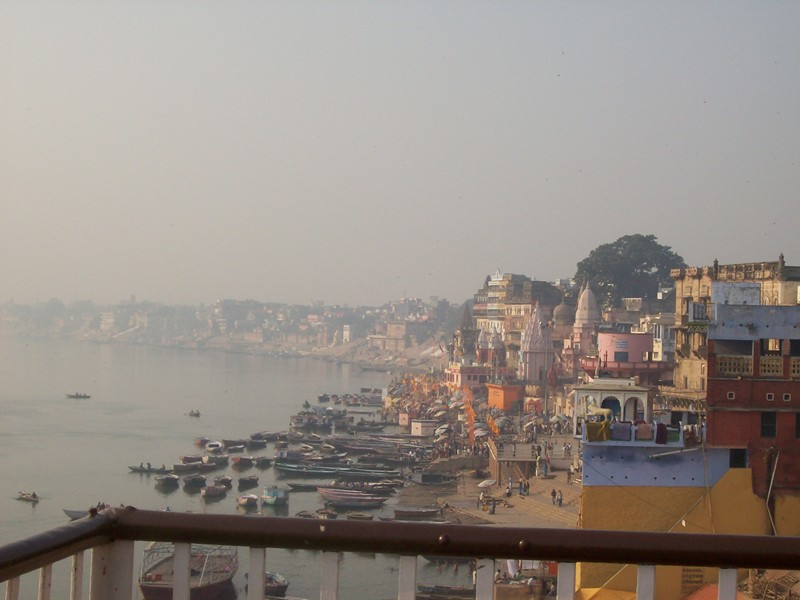
Varanasi is the most sacred city in India. The bay is gorgeous. Being anywhere within a 45 minute rickshaw ride of the old part of town is like having extra lights on in your head. There must still be great saints here.
People come to die here. In fact, friends of Ram's parents got an apartment in order to die in Varanasi. After five years they gave up, moved away, and died somewhere else.
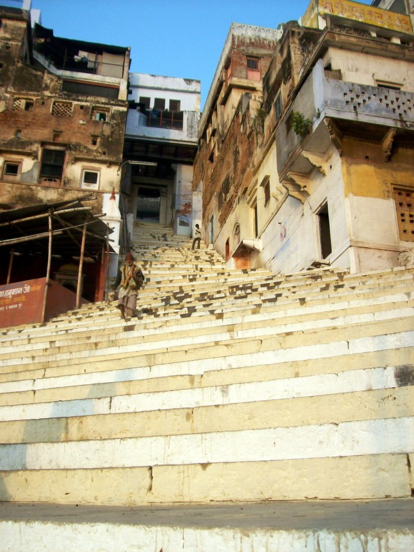
Navigating Varanasi is like working in a skyscraper without an elevator. Ram went racing up and down endless steps with a 30lb (15kg) pack. Thanks to all the getting in shape I'd done by swimming in Canberra, I was able to keep up.
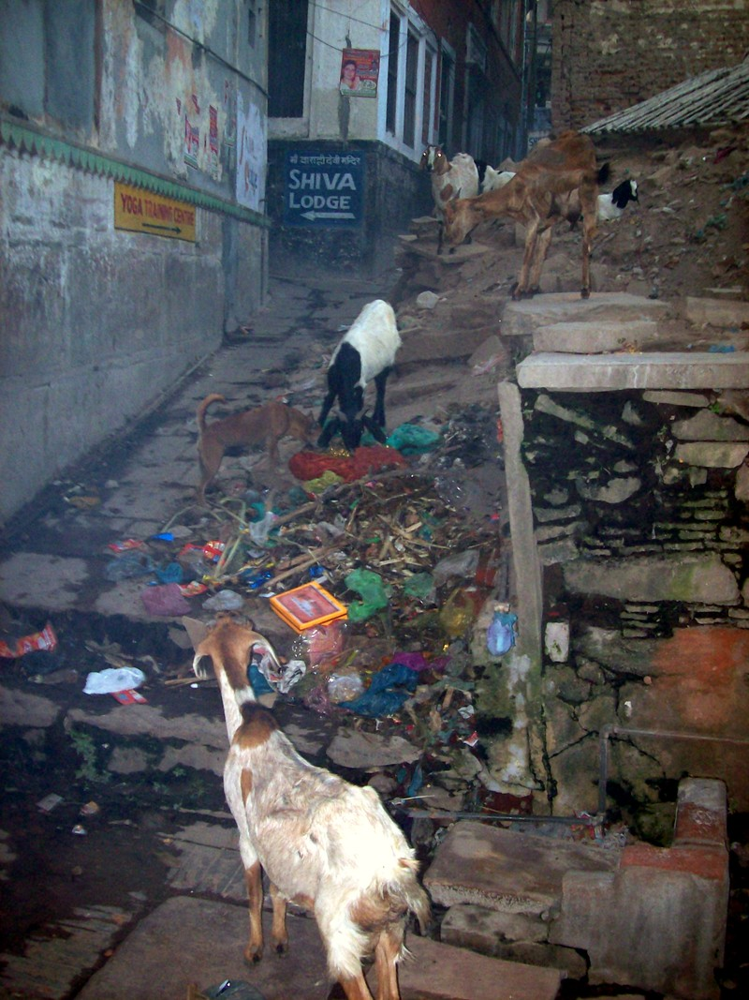
Once you get away from the Ganges, it's more like this. Animals everywhere, the price being that you have to look down while walking. People do try to keep up, going around with pails of water and whiskbrooms, but the animals are ahead.
When I got back to Oz, the Customs form has a checkbox for "Did you visit a farm?" I didn't...but I did, so I checked the box. I was planning to soak my sneakers in bleach when I got home, then throw them away. Customs whisked my shoes away and returned them 60 seconds later, clean, sterile and dry.
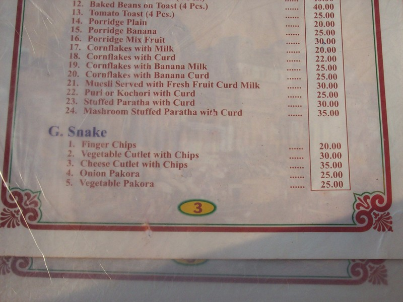
Hotel menu.
In India, you don't make hotel reservations. There are a lot of cheap (biker-grade) hotels around train stations and other gathering spots. You can get a better bargain (usually under $14) on the spot. The reservation system is a bit dodgy anyway. When his favorite hotel was full, Ram made them pull out the ledger book and prove it to him. Which they did, deciphering the scrawls and mapping them onto rooms.
"Biker grade" means that there are holes in the walls, lizards on the ceiling, Q-tips stuffed in leaky faucets; the AC doesn't work, there's a thin patina of grime everywhere, and if the sheets are clean, that's the best you can say. Indian hotels never provide top sheets or towels. It's more sanitary just to pull the common blanket over you, I suppose.
I had planned to get good hotels. Infeasible. If you're traveling by train, you arrive in city centers where the old grungy hotels are. The new Western stuff is many miles away on the edge of town, where the new development is. (New Delhi is growing so fast that Devinder says that when he comes back every year, he can't recognize it.) And since India is Transportation:Impossible once you get off the train or plane...you can't get there from here. It'll take hours.
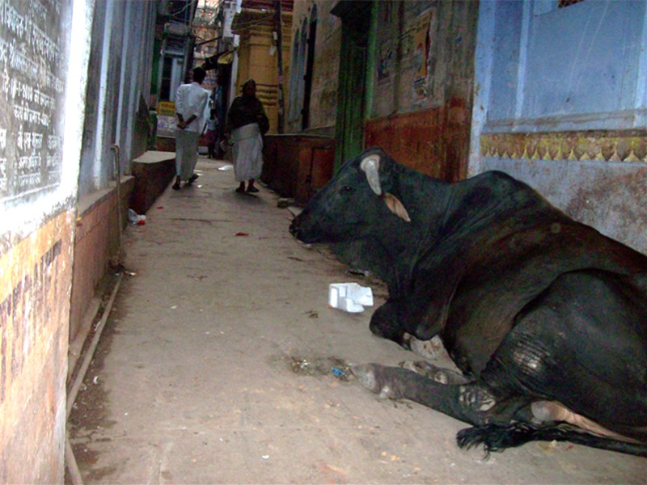
Varanasi is the city of Shiva, God in the aspect of destruction and renewal. The bull is his sacred animal.
Life fell into a rhythm here: get chai, go to a temple for a blessing, get more chai, snack through the day while sightseeing, have a heavy dinner around 10PM. It's the Indian way. Fortunately Ram is as big a chai junkie as me, so I didn't have to suggest hourly chais; he did that for me. There's nothing sweet and subtle about Indian manners. It's Manhattan. You walk up and bellow "Eck chai!" (One tea).
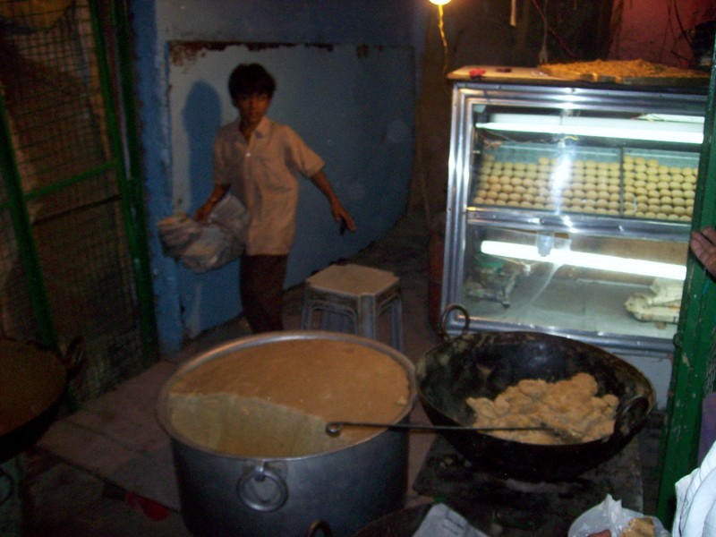
Rabri in the making. Milk is condensed in the wok along with sugar to make a base used to make other sweetmeats. I recommend this place, but given the mazelike nature of the city, probably couldn't find it again. I'd get lost every day trying to hook up with Ram, who couldn't in good conscience stay in the expensive hotels he put me in.
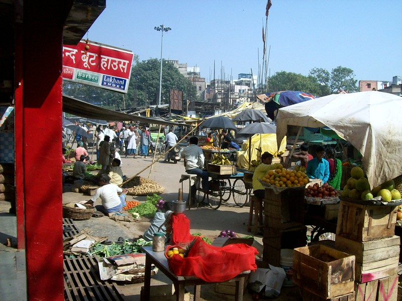
Market in downtown Varanasi
It was in Varanasi that Ram finally fessed up about the kurta and pyjamas. He'd kept mentioning via email that he knew a good tailor in Dakshineswar and I should get some Indian clothes custom-made. I kept blowing it off, and he kept bringing it up. (I didn't want to be the Westerner toodling around India in yogi clothes.) Thinking Mexico, I figured the tailor was his brother-in-law and I'd go with the flow. I made a snotty comment when I observed that everyone over 35 is ultra-trendy (the stuff's all made here), and only a few men over 50 wear the white kurta/pyjamas. Ram winced, but I got the clothes (and for my sins, cut my hand against a stone wall in the process.)
The secret was that Varanasi and Agra are rough towns for tourists. For example, children will invite you home for a family meal, where you'll be poisoned (perhaps fatally) as part of an insurance scam. The Indian government found the never-ending complaints from the US embassy to be embarrassing enough that they posted "tourist police" in these cities. These guys are aggressive and not too bright, and Ram was afraid of getting thrown in jail for hanging around a Westerner. With both of us in yogi whites, wearing identical Guru pendants (which he also supplied), it would be clear that we were traveling as fellow devotees rather than tourist and tout.
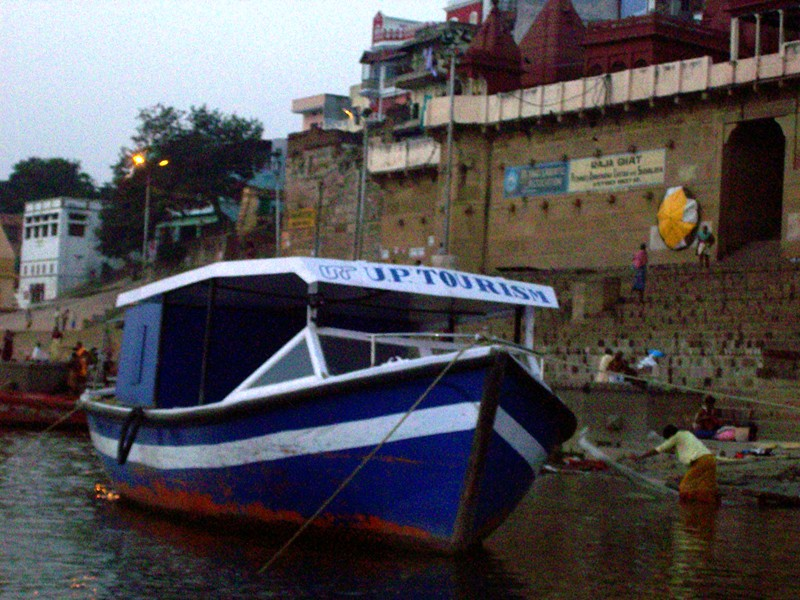
No comment. Or maybe I should clue you in that U.P stands for Uttar Pradesh.
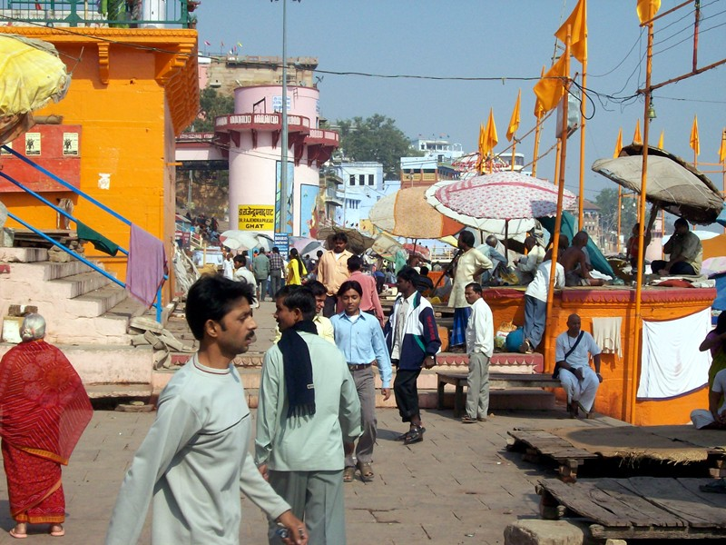
Dasaswamedh ghat.
This bathing ghat is where Mataji meditated in a secret cave at the time of Guruji's autobiography. I figured she'd long left the crowded, dirty town, but upon feeling the amazing vibrations of the city, decided that actually she hadn't.
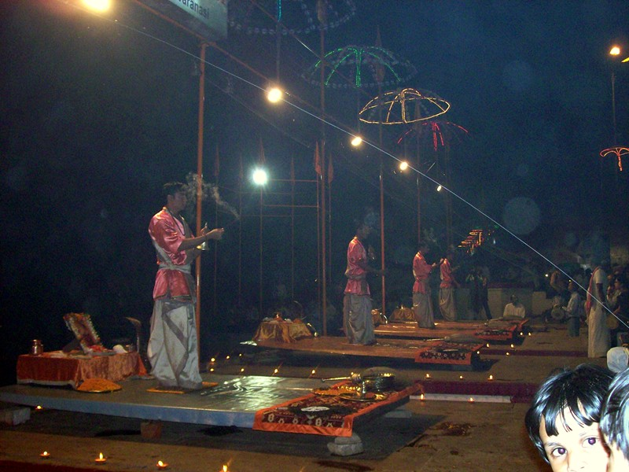
Varanasi is one of three places where Ganga Aarathi is performed. Aarathi is a ritual performed in front of the image of a saint or one of God's 108 aspects. Here it's performed in honor of the river. It's more of a public performance than a religious occasion. Aarati is performed on seven platforms. A bell is rung continuously during aarathi (in the priests's left hand). Here there are seven bells with bellropes that are rung by the audience. Ram steered me to a seat that turned out to be a bellringer seat, so I got to ring during Ganga Aarathi (how cool is that?)
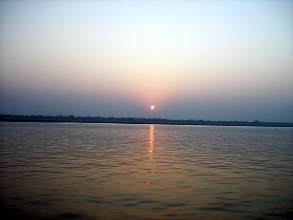
Sunrise over the Ganges
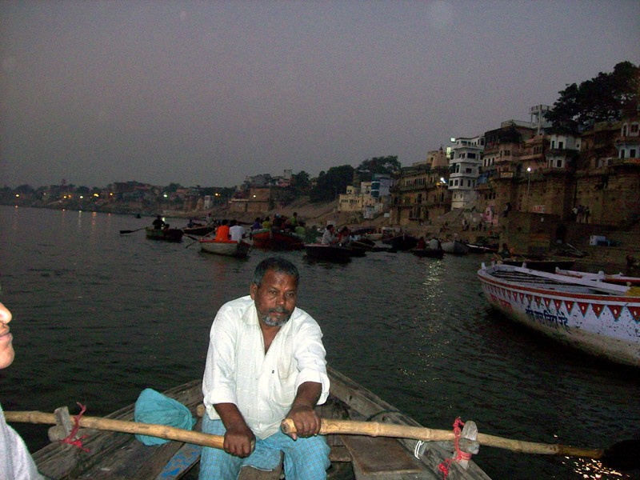
Evening boat ride on the Ganges. The building in the background is a deserted place. The king's ancestors claim it as personal property; the Government claims it as national heritage. The case has been in court for decades while the palace falls into ruin.
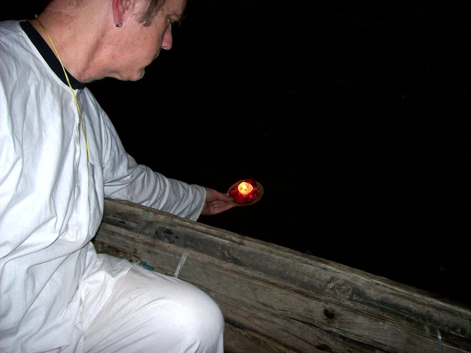
It's also traditional to ride the river at night and set your little light to sail on the infinite.
In SRF, you're not supposed to describe your spiritual experiences. It make you vain and everyone else envious. In these pages, I've slanted toward the down side of India--it's funnier and much easier to put into words. So I'll recount that as soon as I set foot in Varanasi I had a major spiritual experience--but I'm not talking!